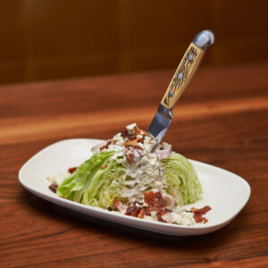

How to make a Fork & Fire wedge salad.

Ingredients
- One quarter head of iceburg lettuce
- Two peices of Duroc bacon.
- A quarter cup of gargazola bleu cheese
- One Shallot,(thinly sliced).
- 2ozblue cheese dressing.
Instructions
- 1.Place qquartered head of iceburg lettuce in center of plate.
- 2.Evenly pour homemade blue cheese dressing over lettuce.
- 3.Top blue cheese dressing, and lettuce with blue cheese crumbles.
- 4.Cut each peice of bacon twice, making 6 smaller peices of bacon. Add to top of salad
- 5.Add sliced shallots to the top of the salad
- 6.Enjoy!